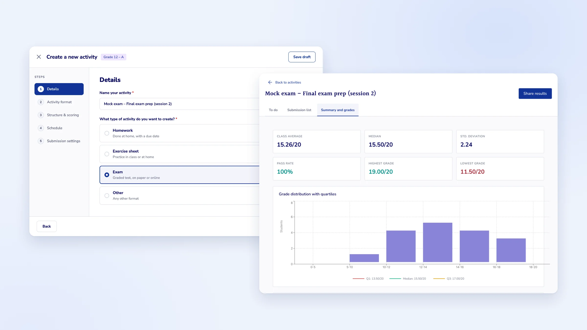
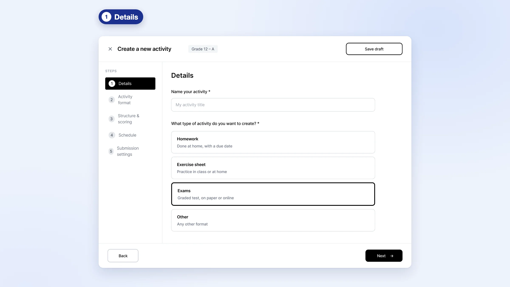
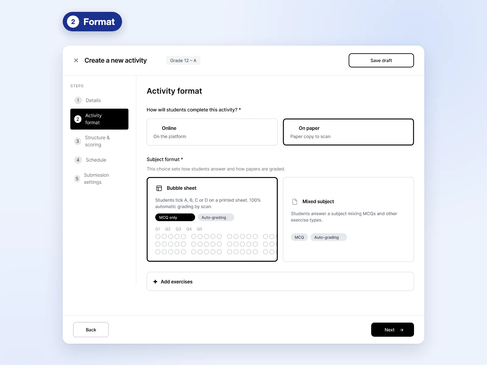
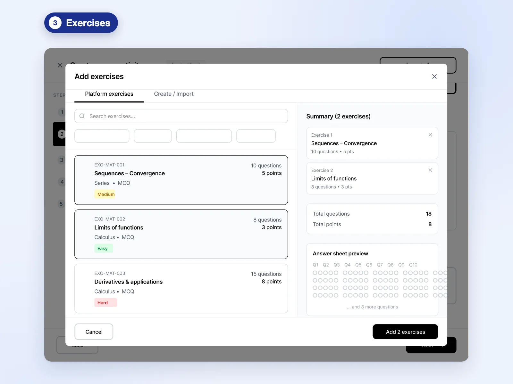
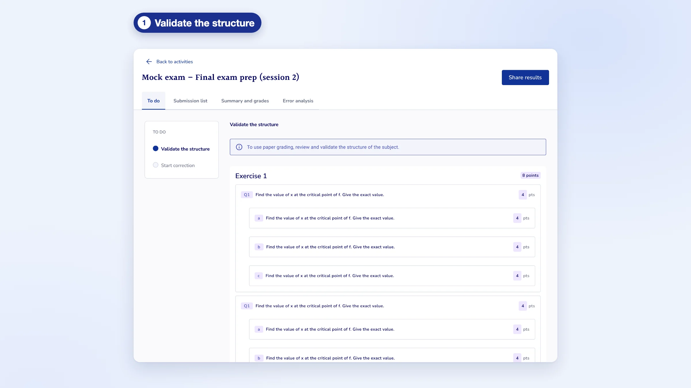
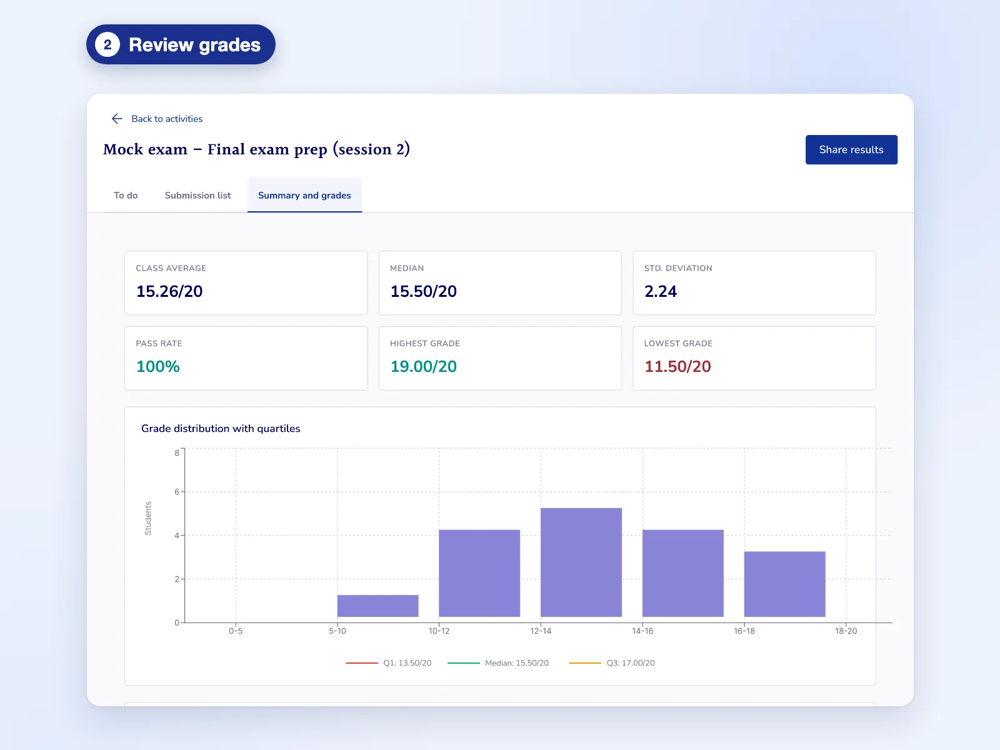
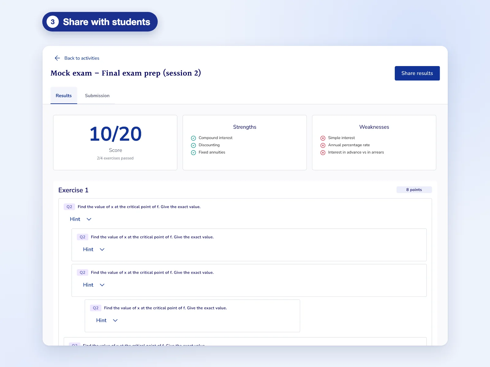

PyxiScience · Assessments
One flow to create an assessment, and AI grading where the teacher keeps the final say

Overview
I merged three creation paths into a single flow, then designed AI-assisted grading where the teacher always makes the final decision.
Details
- Product
- Learning web app for higher-education teachers and students, at an AI edtech startup
- Role
- Founding Product Designer, sole designer
- Team
- 6 people on product: CEO, Head of AI, CTO, developer, PM and me
- Scope
- Discovery · UX · UI · Coded prototypes
Problem
Three paths to the same thing
To create an assessment, teachers had to pick between three paths leading to three different objects that shared the same settings. It caused confusion, extra steps and lost time.
Solution
One flow, then a grading loop
A single creation flow with only the steps that matter, leading straight into AI grading that the teacher reviews, edits and chooses to share.
Result
Creation shipped, grading partly shipped
The new creation flow is in production and saves teachers 5 minutes per assessment. AI grading is partly live; the rest is shown here as a design vision.
Impact
3 1
creation paths, merged into a single flow shipped in production
–5 min
to create each assessment with the new flow
Context
Assessments are the core of the product: they feed the AI's recommendations for each student.
A painful creation flow means fewer assessments, so less data and less useful recommendations.
Our users are higher-education teachers: comfortable with digital tools without being experts. The interface had to stay readable with no training.
Before, reconstructed
Goals
Make creating an assessment fast, then make AI grading something teachers can trust.
- Remove the upfront choice and the duplicated steps.
- Connect creation and grading as one loop.
- Let the AI do the heavy lifting without ever taking the decision away from the teacher.
Process
Three signals pointed to the same problem.
Teacher interviews
University teachers confirmed the frustration with creating assessments.
Amplitude
Usage data went further: in practice, only one of the three objects was really used.
Coded prototypes
I built testable prototypes with Claude Code to try interactions in real conditions, beyond a Figma prototype.
The CEO had also identified creation as a blocker.
Key insights
Insight 01
Three objects, one set of settings.
The three paths were almost identical, yet teachers had to choose one at the very start, without knowing which one fit.
Insight 02
Only one of them was really used.
Amplitude showed that teachers had already picked a winner. The other two paths only added confusion.
Part 1
A single creation flow
Since the three objects shared the same settings and only one was really used, I proposed merging them into one path, with only the useful steps. Two decisions shaped it. One entry point: the type of activity is no longer a separate path but a choice inside the flow, so homework, exercise sheets and exams all start the same way. One exit point: every activity ends in the same grading and results, so students get the same kind of feedback whatever the format.
Creation is designed as the first half of one loop that leads straight into grading.
Shipped



Part 2
AI grading, with the teacher in charge
The AI grades the paper, annotates it, detects errors and drafts a comment for the student. The teacher validates. That principle shaped the whole grading interface.
Shipped



Vision, not shipped
Design principles
The AI suggests, the teacher decides.
No grade is validated without the teacher. If they think the AI is wrong, they take over directly in the interface.
Make the AI's work readable.
Errors are annotated where they happen, so teachers can check quickly instead of rereading everything.
The teacher chooses what the student sees.
The grade and comment are only shared when the teacher decides.
Constraints
The main constraint was the shape in which the AI returned its results.
The AI's output wasn't always stable: the same paper could come back with a different grade or comment. Instead of hiding it, the interface flags those results so teachers review them before anything reaches students. Nothing is sent without a teacher's check.
Rather than designing everything in one go, we added features and steps progressively. Validating the structure, reviewing grades and sharing results are in production; AI-suggested criteria and comments on each paper are still a design vision.
Reflections
Ship even smaller.
I would release features in even smaller pieces, and let teachers try the tool earlier to improve from real use.
On an AI product, usage reveals trust.
Real use quickly shows where trust is won or lost, faster than any prototype.